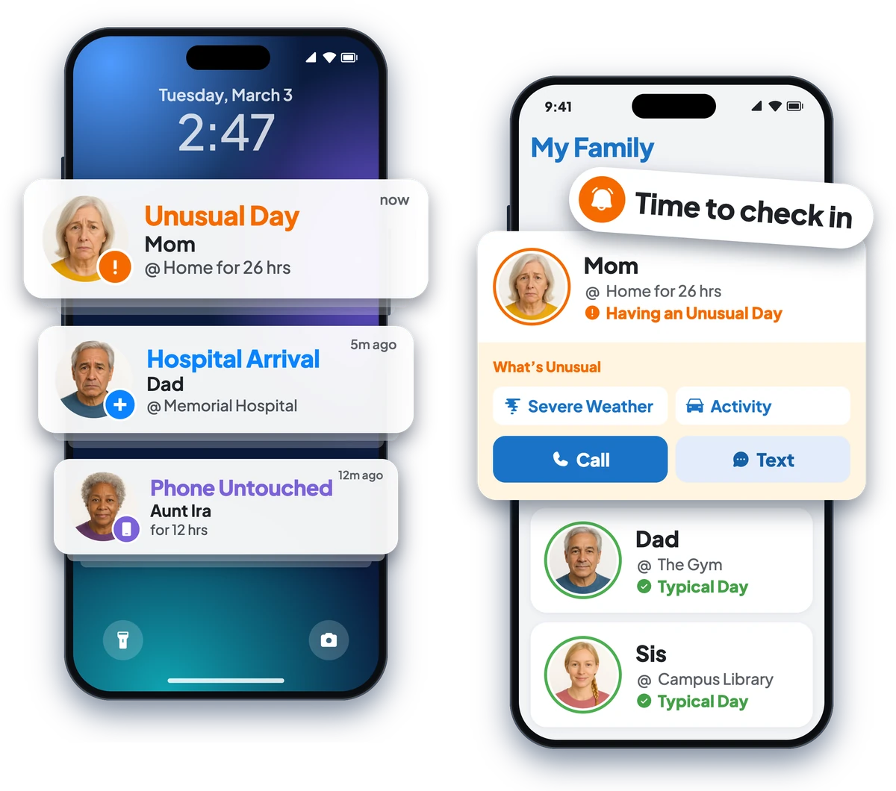
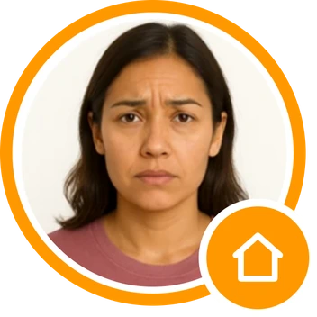
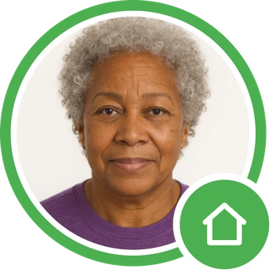

Mom keeps her routine,
you get peace of mind
Check on aging parents from far away.
A heads-up when a storm heads their way, something is reported nearby, or their day looks different. All in one app. Otherwise, quiet.
Alerts instead of tracking.

"Is Mom doing okay today?"
You'll know when a call is worth making
- Severe weather near them. Storms, flood warnings, extreme heat or cold heading toward their town.
- Wherever they go. Wintering at the vacation home in Arizona, a wine tour in Napa or Tuscany, a river cruise through Europe: severe weather alerts work in more than 50 countries, and crime alerts anywhere in the US.
- Nearby crime. A heads-up when something is reported near them, in all 50 US states.
- Unusual Day. A gentle nudge when something is off compared to their own normal routine.
- Phone untouched for hours. A heads-up if their phone hasn't been picked up in a long while.
- Arrivals that matter. Know when they arrive at a hospital or ER.
No alert usually means all is well. When a nudge comes, maybe give her a call.
"Is Mom getting out like she usually does?"
Home longer than usual? You'll know.
Mom has her routine. If she's been home much longer than is normal for her, Looop gives you a gentle nudge. It might be a good time to call.

"Did Dad tell you he's at the hospital?"
At the hospital? You'll know.
Some parents don't want to worry anyone. If Dad arrives at a hospital or ER, you get a heads-up, so you can call and ask how he's doing.
Looop doesn't detect emergencies. If you think someone is in danger, call 911.

Built for every kind of family

"It's all on me."
For the only child far away
You're 800 miles away. You'll still know when to call. And Mom doesn't have to feel watched.
"Did anyone call Dad?"
For siblings sharing the load
You and your brother get the same heads-up, so only one of you needs to call Dad.

"5 Loved Ones in 4 cities."
For the stretched-thin
Parents in two homes, multiple kids in college. One calm screen, and one heads-up when someone needs a call.
"I'm fine. I don't need a babysitter."
A word for your parents
You're right. Looop isn't one.
Looop sends your family alerts instead of tracking you, and only when something seems off. You keep your routine and your independence. Your kids worry less. You get fewer "just checking on you" calls.
- You decide whether to join. Looop works by invitation, so nobody signs you up without your knowing.
- Health & Fitness sharing is available. It's optional, so add it if it helps your family.
- You can change your mind. Leave a group anytime.
Have the talk first
A tool your parent agreed to is one they'll keep.
Before you send an invite, sit down together. Start by telling them how you feel. Show them exactly what Looop shares, and let them decide. Set it up side by side on your next visit, or over a video call.
Not sure what to say? Read our guide: How to Check On Aging Parents Without Making Them Feel Watched.
When it's time to call
Every Loved One's card has one-tap call, text, and FaceTime, and quick messages like "Love you!" And if you ever need it, you can call 911 or one of their saved emergency contacts in one tap.
Looop helps you know when to check in. If you think someone is in danger, call 911 first.
Their routine. Your reassurance.
Invite your parents, and know when it's worth a call.